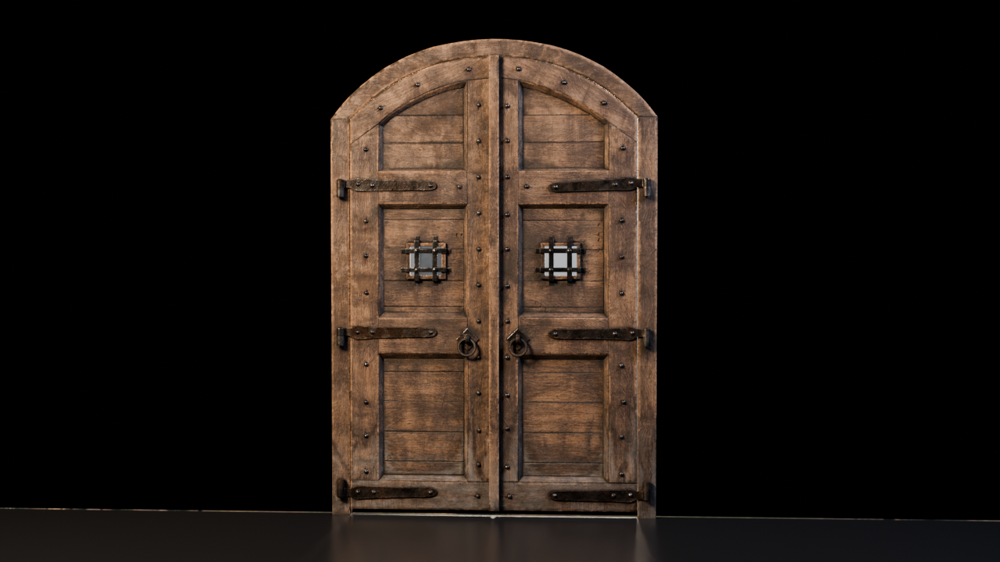
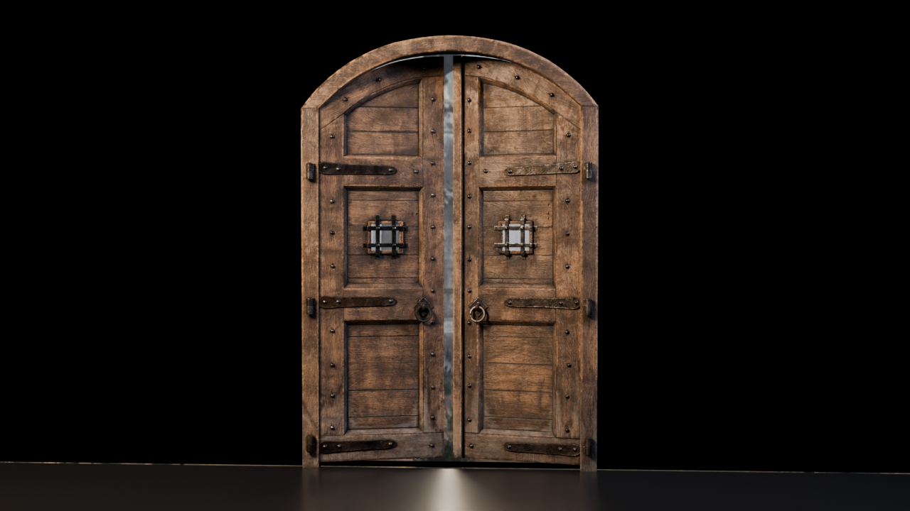
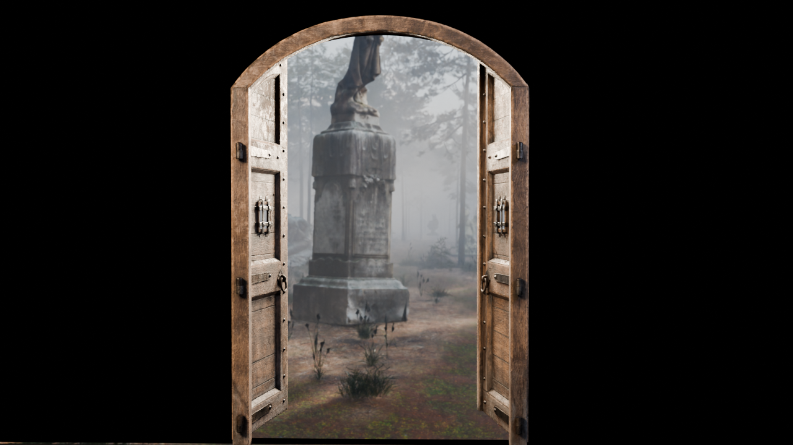

Gate 2 · Act II, the door: for your approval

1 · Closed. After the third statue, the black void stays. The door stands alone in it, lit like the statues: a warm key from the front-left, a cool rim, no fill. It's the approved Poly Haven large castle door (CC0). Two choices appear beneath it: Enter and Leave.

2 · Hovering "Enter". The two leaves ease open a hand's width. Forest daylight shows through the gap and spills across the black floor.

3 · Enter clicked. The doors swing wide and the camera walks through into the forest, arriving at the main forest view. In this render the forest beyond is a flat image, so it's soft and magnified. On the site it is the real 3D forest.
How it behaves on the site
- Enter: the doors open (about 1.2 s), and the camera dollies through the doorway into Act III.
- Leave: the door stays shut and the light under it goes out. The page tries
window.close(); if the browser refuses (normal tabs), it fades to black with "You may close this tab." (Decision D3.)
- The door is light enough to run in real time: about 12.6k faces and 2K textures.